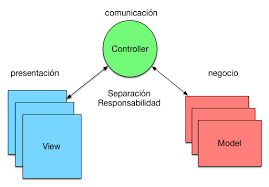
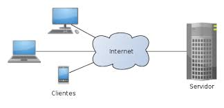

Modelo Vista Controlador (MVC) es un estilo de arquitectura de software que separa los datos de una aplicación, la interfaz de usuario, y la lógica de control en tres componentes distintos. Se trata de un modelo muy maduro y que ha demostrado su validez a lo largo de los años en todo tipo de aplicaciones, y sobre multitud de lenguajes y plataformas de desarrollo.
MODELO:
Acceder a la capa de almacenamiento de datos. Lo ideal es que el modelo sea independiente del sistema de almacenamiento. Define las reglas de negocio (la funcionalidad del sistema). Un ejemplo de regla puede ser: "Si la mercancía pedida no está en el almacén, consultar el tiempo de entrega estándar del proveedor". Lleva un registro de las vistas y controladores del sistema. Si estamos ante un modelo activo, notificará a las vistas los cambios que en los datos pueda producir un agente externo (por ejemplo, un fichero por lotes que actualiza los datos, un temporizador que desencadena una inserción, etc.).
CONTROLADOR:

Recibe los eventos de entrada (un clic, un cambio en un campo de texto, etc.). Contiene reglas de gestión de eventos, del tipo "SI Evento Z, entonces Acción W". Estas acciones pueden suponer peticiones al modelo o a las vistas. Una de estas peticiones a las vistas puede ser una llamada al método "Actualizar()". Una petición al modelo puede ser "Obtener_tiempo_de_entrega ( nueva_orden_de_venta)
VISTA:

Recibir datos del modelo y los muestra al usuario. Tienen un registro de su controlador asociado (normalmente porque además lo instancia). Pueden dar el servicio de "Actualización()", para que sea invocado por el controlador o por el modelo (cuando es un modelo activo que informa de los cambios en los datos producidos por otros agentes).
FLUJO DE CONTROL DE MVC

- El usuario interactúa con la interfaz de usuario de alguna forma (por ejemplo, el usuario pulsa un botón, enlace, etc.)
- El controlador recibe (por parte de los objetos de la interfaz-vista) la notificación de la acción solicitada por el usuario. El controlador gestiona el evento que llega, frecuentemente a través de un gestor de eventos (handler) o callback.
- El controlador accede al modelo, actualizándolo, posiblemente modificándolo de forma adecuada a la acción solicitada por el usuario (por ejemplo, el controlador actualiza el carro de la compra del usuario). Los controladores complejos están a menudo estructurados usando un patrón de comando que encapsula las acciones y simplifica su extensión.
- El controlador delega a los objetos de la vista la tarea de desplegar la interfaz de usuario. La vista obtiene sus datos del modelo para generar la interfaz apropiada para el usuario donde se refleja los cambios en el modelo (por ejemplo, produce un listado del contenido del carro de la compra). El modelo no debe tener conocimiento directo sobre la vista. Sin embargo, se podría utilizar el patrón Observador para proveer cierta indirección entre el modelo y la vista, permitiendo al modelo notificar a los interesados de cualquier cambio. Un objeto vista puede registrarse con el modelo y esperar a los cambios, pero aun así el modelo en sí mismo sigue sin saber nada de la vista. El controlador no pasa objetos de dominio (el modelo) a la vista aunque puede dar la orden a la vista para que se actualice. Nota: En algunas implementaciones la vista no tiene acceso directo al modelo, dejando que el controlador envíe los datos del modelo a la vista.
- La interfaz de usuario espera nuevas interacciones del usuario, comenzando el ciclo nuevamente.